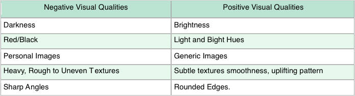
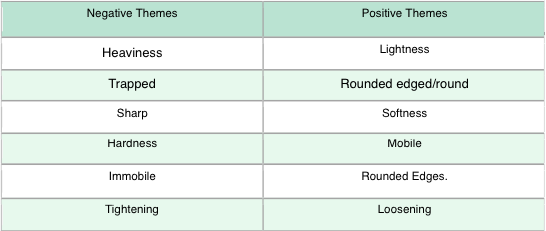
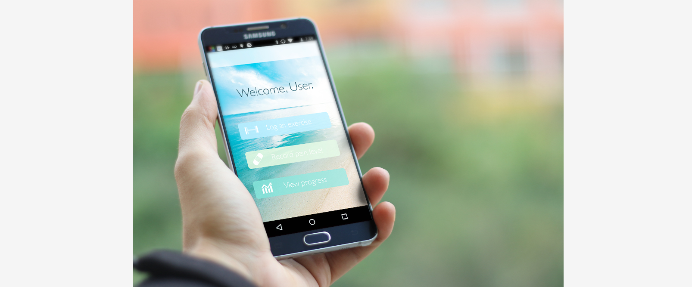
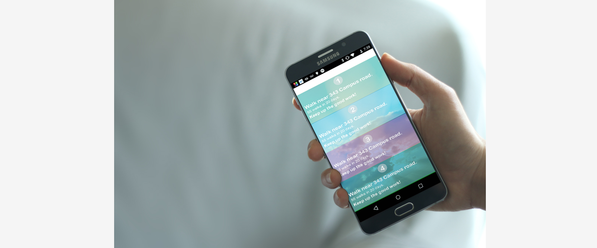
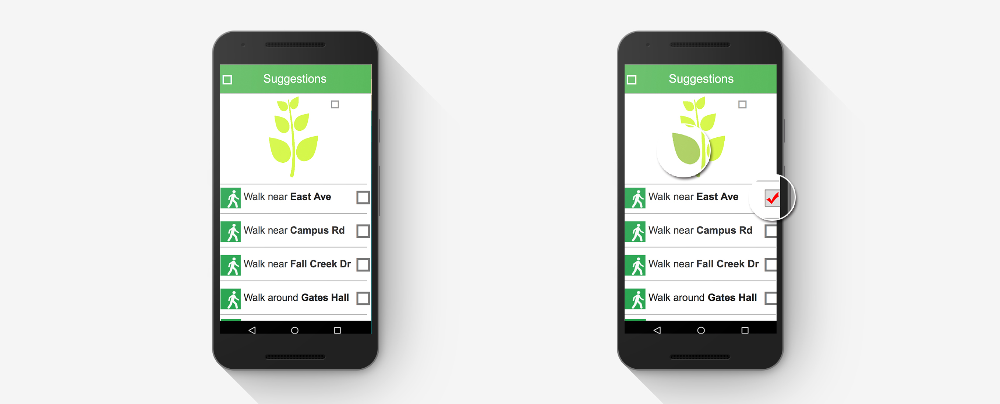
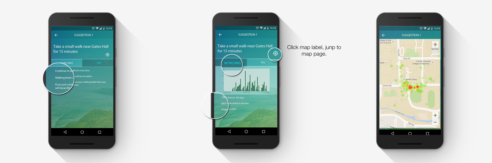

MyBehaviorCBP
My Role:
Visual/UI Design
UX Design
Prototyping
Team Members:
Dr. Min Hane Aung and Mashfiqui Rabbi
Co-Mentor:
Prof. Tanzeem Choudhury and Prof. Geri Gay
Other team members:
Yuling Chen, Katie Schmidt
MyBehavior CBP is an auto-personalizing Andorid APP to encourage regular activity for chronic back pain (CBP) management. This system has the capacity to generate personalised and persuasive suggestions based on continuously learning a user’s past physical activities and preferences. It is both physiotherapeutic perspective and psychologically persuasive to people living with chronic conditions. Efficacious findings and good traction with the CBP specific group would pave way to larger studies. It would also give transferable knowledge to the management of other chronic pain conditions and rehabilitation domains. To the best of our knowledge this would be the first time this type of mobile computational intelligence has been used for management of chronic pain.
However, chronic and lasting pain often put people in a negative mood that de-motivates them to exercise. Thus we need to present the app in a visually pleasing manner that does not invoke any negative emotion.
Design Output
Prototype - Built by Framerjs
Design Process

Initial App

Following screenshots are designs in initial prototype. It is functional and can be installed on the phone. It has all main functions including: learn user activities and preferences, generate personalised suggestions,etc.
User Interface Design Study
We did a lot research on emotional designs for MyBehaviorCBP in order to avoiding negative emotions of users. In the paper "Positively Picturing Pain? Using Patient-generated Pictures to Establish Affective Visual Design Qualities" from Catherine Stones we got some valuable information:
Five affective visual qualities that positive pictures could posses:
Six affective themes that positive pictures could posses:
Original front end concept (by Katie Schmidt):
widget concept:

logo concept:
app concept:


Interview
We We conducted 9 user interviews based on the initial app and design concepts.
GOALS:
We want to invite people to reflect on designs for the app, handle a demonstration version and give us feedback on the way information is presented, the content of what is presented and questions about the overall design and usability of the app.
Method:
We conduct face to face interview with target people who has chronic pain for over six months.
1. We asked questions about what kind of information they want to get from the app and how to get they.
2. Then we showed screen shots of initial app and talk about their impressions.
3. Asked they to use the initial app for a while and talk about the usability and other suggestions.
4. Show UI concepts and asked what kind of visual design they prefer.
Feedback:
Here are some feedback examples from initial designs.
1. For suggestions content in the app:
exercises they prefer: small walk, yoga, swim.
2. For usability:
Confused Labels
Heat Map
Progress Chart
3. For design:
Prefer light background
Most of them doesn’t care about sharp edges.
Iteration Designs
Iteration 1:
According user feedback of the original version, they felt the interface is too crowded and not friendly enough. There is no emotional design or functionality that can encourage them to do exercise. And some suggestion labels are not consistent with corresponding content.
So I used logo to represent how many suggestions the user has followed. Leafs in the table can change color and each leaf stand for one suggestion. Since the app has monitor function the leaf can change color without any manipulations from user.

Iteration 2:
After team and expert critique, we gave up iteration 1 at last because most of our target users are in older ages and this idea is too playable. Furthermore, the correctness can not be guaranteed and usability is low.
To make the interface more friendly, I used background picture with themes of sky, sunshine and other sceneries.
The navigation should also be simple and understandable enough. Many user said they didn’t understand labels in each suggestions page. So I delete them and use as little kinds labels as possible. And I used drawer layout to make it easy to use.
I keep the drawer layout idea to make it easy to use and gather all functions together.
I also found some user didn’t know that they can see details of each suggestion. So I added arrow for each suggestion to indicate they can explore more.
